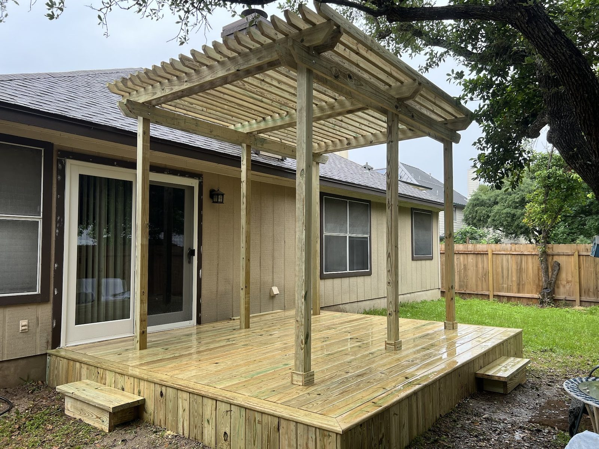

Handyman · Bastrop, TX
Small jobs welcome. Big projects too.
Honest, punctual, meticulous work, from a patched wall to a full kitchen refresh.
Handyman · Bastrop, TX
Honest, punctual, meticulous work, from a patched wall to a full kitchen refresh.

On time, fair quotes, and we check you're happy before we pack up.
Google rating4.9
Google reviews38
Hooks
Residential and commercial renovation and repair around Bastrop, with custom projects welcome.
Demo of old counters, sinks, faucets, cooktops and tile backsplashes, plus panel upgrades.

Tile showers, tubs and finish work done with careful detail.

Drywall holes, hardwood flooring, exterior trim and the small fixes around the house.

Done


Notes
4.9 · 38 Google reviews
John and Clint took care of exterior trim repairs and deck work for us, and the results were solid across the board with good attention to detail throughout. He knew his stuff from the first estimate, was quick to respond, and backed his labor with a one-year warranty.
We are so pleased with the work completed by John and his team. He was prompt in responding to our inquiry and gave reasonable estimates for a couple possible scenarios on our needed kitchen repairs / remodel. He conducted the demolition of our old counter and backsplash swiftly and efficiently, alerting us to the additional water damage discovered.
John and Clint did an outstanding job installing my hardwood flooring and repairing several holes throughout my home. Their workmanship was top-notch, and the attention to detail really shows, everything looks seamless and beautifully finished. They were punctual and did above & beyond. I truly appreciate the care they took to make sure everything was done right.
I can’t say enough good things about John and Clint, they are both honest, smart, and hardworking guys! I contacted John in May and we ended up having him do a BUNCH of work to our home that we had just purchased and I couldn’t be more happy with everything he did. He is very meticulous in his craftsmanship and will check in with his clients to make sure you’re satisfied.

The guy behind the van
Over 25 years of combined experience in residential and commercial renovation and repair.
Hardwood floors, backsplashes, exterior trim, decks and odd jobs around the house. Small jobs welcome, custom projects too.
Call or stop by
Bastrop, TX Directions
Call for a free estimate within the service area.